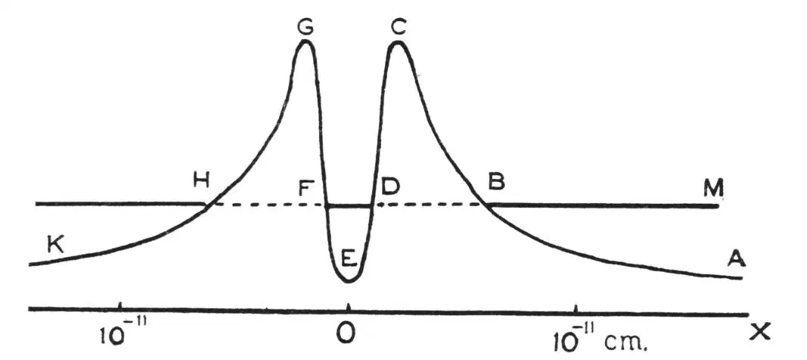

中文
中文R. W. Gurney and E. U. Condon
Editor’s Note
The “wave mechanics” description of quantum theory arose from the work of Erwin Schrödinger in the 1920s, which built on the suggestion of Louis de Broglie in 1924 that matter can possess wave-like properties. Schrödinger’s description of the behaviour of quantum particles was formulated purely in terms of waves (or wavefunctions) whose amplitude in different parts of space specified the probability of the particle being there. Here Ronald Gurney and Edward Condon perceptively states what this implies for the decay of radioactive atomic nuclei by emission of alpha particles. They points out that the escape of the alpha particle can be regarded simply in terms of overlap between wavefunctions inside and outside the nucleus. This is a form of quantum “tunnelling” through an energy barrier. 中文
AFTER the exponential law in radioactive decay had been discovered in 1902, it soon became clear that the time of disintegration of an atom was independent of the previous history of the atom and depended solely on chance. Since a nuclear particle must be held in the nucleus by an attractive field, we must, in order to explain its ejection, arrange for a spontaneous change from an attractive to a repulsive field. It has hitherto been necessary to postulate some special arbitrary “instability” of the nucleus; but in the following note it is pointed out that disintegration is a natural consequence of the laws of quantum mechanics without any special hypothesis. 中文
It is well known that the failure of classical mechanics in molecular events is due to the fact that the wave-length associated with the particles is not small compared with molecular dimensions. The wave-length associated with α-particles is some 105 smaller, but since the nuclear dimensions are smaller than atomic in about the same ratio, the applicability of the wave mechanics would seem to be ensured. 中文
In the classical mechanics, the orbit of a moving particle is entirely confined to those parts of space for which its potential energy is less than its total energy. If a ball be moving in a valley of potential energy and have not enough energy to get over a mountain on one side of the valley, it must certainly stay in the valley for all time, unless it acquire the deficiency in energy somehow. But this is not so on the quantum mechanics. It will always have a small but finite chance of slipping through the mountain and escaping from the valley. 中文
In the diagram (Fig.1), let O represent the centre of a nucleus, and let ABCDEFG represent a simplified one-dimensional plot of the potential energy. The parts ABC and GHK represent the Coulomb field of repulsion outside the nucleus, and the internal part CDEFG represents the attractive field which holds α-particles in their orbits. Let DF be an allowed orbit the energy of which, say 4 million volts, is given by the height of DF above OX. Approximately, we can say that with this orbit will be associated a wave-function which will die away exponentially from D to B. Again, corresponding to motion outside the nucleus along BM, there will be a wave-function which will die away exponentially from B to D. The fact that these two functions overlap in the region BD means that there is a small but finite probability that the particle in the orbit DF will escape from the nucleus along BM, acquiring kinetic energy equal to the height of DFBM above OX, say 4 million volts. This occurrence will be spontaneous and governed solely by chance. 中文

Fig. 1 中文
The rate of disintegration, that is, the probability of escape, depends on the amount of overlapping of the wave-functions in the regions DB and FH, and this is extremely sensitive to the height to which the potential curve at C rises above BDF. By varying this height through a small range we can obtain all periods of radioactive decay from a fraction of a second, through the 109 years of uranium, to practical stability. (In considering the transmutation of a molecule into its isomer, Hund found a similar vast range of transformation periods, Zeit. f. P., 43, 810; 1927) If the potential curves for the interaction of an α-particle with the various radioactive nuclei are similar, we can obtain a qualitative understanding of the Geiger-Nuttall relation between the rate of disintegration and the range of the emitted α-particles. For the α-particles of high energy the wave function for outside motion will overlap that for the inside motion more, and the rate of disintegration will be greater. 中文
Besides obtaining a general idea of the mysterious instability of the nucleus, we can visualise in this way one of the most puzzling results of recent experimental work. An α-particle having the same range (2.7 cm) as those emitted by uranium should, if fired directly at the uranium nucleus, penetrate its structure; while faster α-particles should do so, even when not fired directly at the nucleus. It was therefore disconcerting when, on examining the scattering of fast α-particles fired at uranium, Rutherford and Chadwick (Phil. Mag., 50, 904; 1925) could find no indication of any departure from the inverse square laws. But from the model outlined above, this is what would be expected. For if the height of BM above OX represents the energy of the uranium α-particles, then a faster particle fired at the nucleus will simply run part way up the hill ABC and return without having encountered any change in the repulsive field or any nuclear particles (which are describing orbits within the region GEC). 中文
The peculiar property of the wave mechanical equations which finds application here has also been applied to the theory of the emission of electrons from cold metals under the action of intense fields (Oppenheimer, Proc. Nat. Acad. Sci., 14, 363; 1928; and Fowler and Nordheim, Proc. Roy. Soc., A, 119, 173; 1928). Ordinarily, an atom does not lose its electrons because the attractive field of the atom remains attractive to all distances. But when an intense field is applied, then the attractive field is reversed in sign a short distance from the atom. This makes the resultant potential energy curve similar to that in the diagram, and so the atoms begin to shed their electrons. 中文
Much has been written of the explosive violence with which the α-particle is hurled from its place in the nucleus. But from the process pictured above, one would rather say that the α-particle slips away almost unnoticed. 中文
(122, 439; 1928)
Ronald W. Gurney, Edw. U. Condon: Palmer Physical Laboratory, Princeton University, July 30.